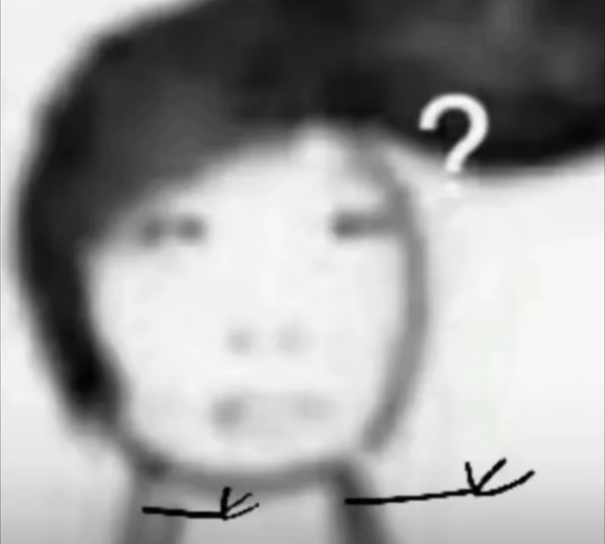

真的的勇敢是保护自己，而不是挑战危险，只有懦夫才会怂恿他人[呆无辜]
成人舞蹈会这样教吗[流泪]好想这样练
《女婿の报复》
谁想的损招！让比格给八旬老太当陪伴犬？
比格犬受害者联盟又一最新力作
我家死狗睡我奶的床，坐我奶的沙发，玩我奶的假牙[泪奔][泪奔]
我们附近一老太太，之前养的可卡，可懂事了，曾经还救过老先生的命，因为当时老先生发病还是可卡去喊的老太太，后来狗没了，老太太每次和我说起都要哭的，然后儿子给她买了条史宾格，老太太每次边和我说边骂[捂脸][捂脸][捂脸]
疑似爸爸给外婆下马威[黑脸]
比格：“wer！wer！” 奶奶：“你在歪啥歪” [泪奔][泪奔][泪奔]
wer wer wer~
外婆怕狗踩不到凳子还得挪了挪哈哈
天杀的有人把比格当圣伯纳忽悠卖给家里人
给那么大岁数的奶奶整个比格咋想的，这么大岁数了也不让人安生[泪奔]
我奶的陪伴犬[呲牙]
建议别给老人养，难训的狗，老年人一生气脑溢血就上来了[捂脸]我奶奶就是这么走的
这不纯纯折磨老人吗[泪奔] 你爸什么居心！
禁止虐待老人[柴犬][柴犬]
我家狗把我奶的假牙都给嚼了 气的老太太血压呜呜高[九转大肠]
一个学过十年吉他的人告诉你，弹吉他一定要靠时间的沉淀，要靠时间慢慢的积累经验，别人早上7点练习，我6点练习，别人晚上练习到9点，我练习到10点，早晚练习，勤能补拙，耐得住寂寞，练吉他不能急，刚开始弹不好很正常，时间久了，自然就挂到咸鱼上去了。
要是我有钱那该多好，抖音刷到一个难的就去帮一个，可惜我没钱，我自己也难[流泪][流泪][流泪][流泪][流泪]
GOGOGO 出发喽

这抽象程度放到现在都是王炸
这电影还是吃了出的早的亏[捂脸][OK]
这电影太超前了[捂脸]放现在票房赶上战狼
林丹也是好起来了 能跟镜哥打球了[猪头]
镜子你给我管理员不[微笑][微笑][微笑]我真的生气了自己看看粉丝群，从来不看！！我好失望又无力[流泪][流泪][流泪]真的生气了！！
这种狗吃屎最猛了
到底是到年纪了，开始爱听了
京剧唱的是：王、权、富、贵 黄梅戏唱的是：儿、女 、私 、情 豫剧唱的是: 忠、孝、节、义 川剧唱的是：尔，虞，我，诈， 秦腔唱的是：江，山，社，稷，[呲牙]
小时候认为自己身披铠甲济世救人，如今身犯贪嗔痴三罪苟活。
红如温，急如眼，破如防，暴跳如雷[捂脸]
最后，我是庄寒雁，我要开始说谎了。
要是编成剧本杀应该超级好玩吧[黑脸]
我去周姨娘举着刀追庄爹的时候我真觉得特别像门里人[黑脸]
庄府这道门，换了阮澜烛来他会直接杀了庄仕洋[惊喜]
我上哪儿找又看致命游戏 又看雁回时的人啊
剪的好好啊，恐怖感拉满[舔屏]
正在追，你这个宣传片比原著还勾人心魂[鼓掌][鼓掌][鼓掌]
这个时候千万不能回过神来
这时候只要脑子反应过来，一切就完蛋了[愉快]
打音游的时候走神 反应过来之后不敢思考 强制自己乱想 手指会自己点[黑脸]
开车走神想别的事儿，突然发觉自己在开车，发现都过几个红绿灯了[愉快]
有一次因为间隔时间太久没去视奸以前的暗恋对象，死活想不起QQ号，但是当把手放在手机键盘上时自己就打出来了[憨笑][鼓掌]
魔方有人懂吗？全靠肌肉记忆拧，别人问我公式是什么，根本想不起来[捂脸]
跑操的时候发呆发现回过神发现身体还是正常跑着[发呆]
比如说我在背书的时候[憨笑]脑子记不住，但是有肌肉记忆[憨笑]
有时候打音游慢慢眼睛都跟不上，但手就是每个都点上了，原来叫心流吗[黑脸]
其实只需要一个摄像头手指就重新归顺了[憨笑]
高中一模290 二模索性开抄，三模直接演都不演了，直接给我干全班第二然后高考自信心爆棚超常发挥400➕[憨笑][左上]
入伍第一次外出去网吧登原神，脑子还在想怎么开背包来着手已经打开了[捂脸][捂脸][捂脸]
一首歌弹久了然后脑子忘记下一步该干什么了，手已经做出来了[愉快]
真的，吉他已经卖掉三年了，好久不弹无题了，结果拿过来琴就弹出来了脑子都没反应过来
你说出了中国大实话[比心][比心]
说的太好了，悄悄的穿上便衣暗访，才能见到老百姓说出来的事实
找不到巡视组
半夜根本不敢去厕所，回来就是站票[流泪][流泪]
不是？这小东西还会说话啊？[发呆] 
我兄弟真是360度无棱角啊[尬笑]
兄弟还知道逗姐姐爷爷们开心[调皮]
98+1＝
终于到我推了！！！！！[憨笑][赞]
还是喜欢孙老师这要死不活的样子[赞][赞][赞]
喜欢跳手势舞的未来就业方向[憨笑][憨笑]
开黄腔的就应该在国道上当减速带[憨笑]
给嘎吱窝散味呢
姜叶，你在不在，我赐你十斤高利贷
回家去
上外屋地啦啦啦啦去……
咕涌两下的动作跟我二大爷弄拖拉机似的[憨笑]
能不能回橙色收音机[憨笑]求你了[憨笑]
怎么不带宝葫芦玩了
长得怎么这么像命比黄连苦三分
湾仔码头 创始人[赞]一个女人带着孩子 还要摆摊……她的故事，我六年前就看到过，那会儿内心很动容的 感觉太不容易了[逞强落泪]
[看]要是有个老六上去安排了几百下甚至更多，岂不是……
两个都是我弄的 我问店员能不能给我一个 他说不能[憨笑]气的我
抓娃娃你就守着一个一直抓，商家都是设置好的，多少次能抓到一个。当然不排除一些商家个别机子设置的你怎么抓都抓不上来[抠鼻]
为啥说河南出祖宗？
很好奇你们这些深情的人到底都是什么星座[宕机][宕机][宕机]
Read more: